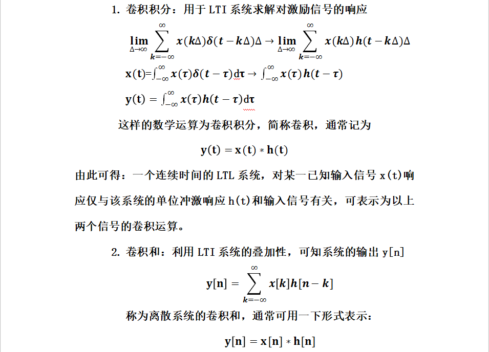

卷积与本课之间的关系？
信号与系统是我们专业课的基础，是需要每一个电信人都要熟悉和掌握的，卷积在课本第二章学习LTI系统的时域分析里面出现，它是求解LTI系统的一般办法可以说的是想学好信号于系统学会卷积这一点很重要。
卷积可以做什么？
是LTI系统普遍适用求响应的方法，也是变换域分析的基本问题。（从理论上讲）卷积方法可以解决LTI系统对任何输入信号的响应。
近代，随着信号与系统理论研究的深入及计算机技术的高度发展，卷积方法在现代地震勘探、矿物勘探、超声诊断、光学成像、y系统辨识及其他诸多信号处理领域中得到了广泛的应用。
比如在地震勘探中的应用地震勘探中,在地表激发点激发的地震子波(seismic wavelet)向地下传播,当遇到地下波阻抗界面时,一部分能量就会作为反射地震波向上反射回地表,被地面的传感器接收,随着地震波不断向下传播、反射、接收,就会记录一系列时间延迟的地震波(大地滤波后的地震子波),称为地震记录 .这一过程或地震记录可以用数学模型描述.如果假设地下介质为古皮奥(Goupilaud)的水平层状介质模型,子波为雷克(Ricker)子波,地震记录可以看作是由震源子波与地下反射率函数、多次反射、仪器等诸多因素的相褶
积的过程,令x(t),w(t)和n(t)分别表示地震记录,地震子波及噪声,褶积过程数学模型描述为 ：
长期以来,褶积模型广泛用于描述地震信号.顾名思义,反褶积就是褶积的逆过程,从地震记录x(t)中恢复出反射率函数r(t) .
